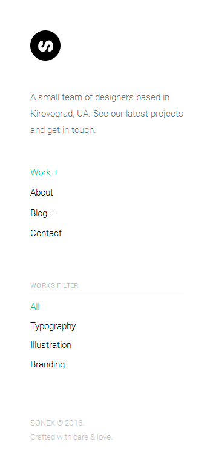
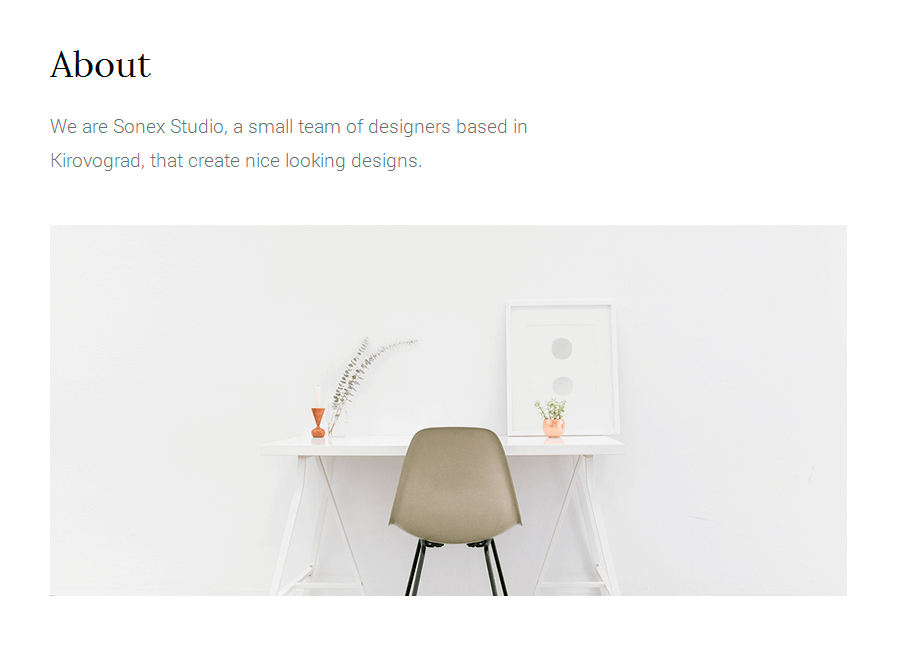

Common Parts
Some pages has common parts such as sidebar and page title.
Sidebar
Each page has sidebar part. It's a block which contains logo, intro message, navigation, different widgets and copyright.
sidebar
<header id="sidebar">
<div class="sidebar-inner">
<a class="logo smooth-leave" href="index.html">
<img src="img/logo.png" alt="GA">
</a>
<p class="intro"></p>
<nav>
<ul>
<li class="dropdown"><span class="current">Work</span>
<ul>
<li><a class="smooth-leave" href="index-columns-2.html">2 Columns</a>
</li>
<li><a class="smooth-leave current" href="index.html">3 Columns</a>
</li>
<li><a class="smooth-leave" href="index-columns-4.html">4 Columns</a>
</li>
<li><a class="smooth-leave" href="project-page.html">Project Page</a>
</li>
<li><a class="smooth-leave" href="project-page-alt.html">Project Page Alt</a>
</li>
</ul>
</li>
<li><a class="smooth-leave" href="about.html">About</a>
</li>
<li class="dropdown"><span>Blog</span>
<ul>
<li><a class="smooth-leave" href="Blog.html">Prints</a>
</li>
<li><a class="smooth-leave" href="Blog-alt.html">Shirts</a>
</li>
<li><a class="smooth-leave" href="Blog-single.html">Single Post</a>
</li>
</ul>
</li>
<li><a class="smooth-leave" href="contact.html">Contact</a>
</li>
</ul>
</nav>
<div class="widgets-block">
<!-- YOUR WIDGETS -->
</div>
<p class="copyright">Dhalavai Nathan © 2020.<br>Crafted with care & love.</p>
</div>
</header>Page Title
Some pages has block called page title which contains title, text and image (I recommend to use 1000x465px size).
page title
<div class="page-title">
<div class="row">
<div class="col-md-8">
<h1>About</h1>
<p class="lead">Lydia’s Gyurina’s (“jur-ee-na”) moving image and performance work deals with themes of awkwardness, disengagement, and the inherent narcissism of self-exploration. Through repetitive actions and uncomplicated editing, Lydia maintains an aesthetic of neutrality through simplicity, while investigating the difficult and complex. In her self-portraiture, Lydia seeks to foster empathy for the bizarre, awkward, and solipsistic. Through the use of the personal and specific, she seeks to re-integrate emotion and realness into the aloofness which often defines fine art spaces.
Lydia’s animations employ the same naive aesthetic of her video work, with a heavy focus on the hand-made. She has a special focus in stop motion, with work including fabricated puppet animation, and animations created using charcoal drawings. In two dimensions, she works frame-by frame in paper and index cards, or incorporates hand-drawn elements into digital outputs. In a series focusing on magical cell biology, culminating in the short film “Mitosis,” she investigates the depersonalization inherent in the disengagement of the person from their biological form.
The use of language in Lydia’s work is informed by her position as a poet. In line with her visual work, Lydia’s writing often uses detached, repetitive, yet legible language with the unreachable goal of creating a truly neutral expression and understanding of the self and reality. Much of her writing is non-narrative, instead using list-like forms as a means of “cataloging,” where realness feels flat, and profundity feels insurmountable. Lydia’s integration of language into her video and performance works often convolutes, rather than illustrates. In some places, the specificity of spoken language makes the abstract relevant and real. In other places, language complicates, leaving the viewer puzzled yet implicated.
Lydia has worked as a production assistant, library assistant, and humanities researcher, and seeks to continue work in professional videography, post-production, or library and museum studies. Her work has been shown at the Anderson Gallery, Sediment Varve, and the Crenshaw House in Richmond, VA, as well as at the Moving Silently exhibition in Vallejo, CA. Lydia will graduate from Virginia Commonwealth University Honors College in the spring of 2020, with a BFA in Kinetic Imaging and a minor in Creative Writing. She currently resides between Richmond, VA and Boston, MA.</p>
</div>
<div class="col-md-12">
<div class="page-title-image">
<img src="img/about/title.png" alt="">
</div>
</div>
</div>
</div>If you have any questions that are beyond the scope of this help file, please feel free to email via my user page contact form here. Thanks so much!